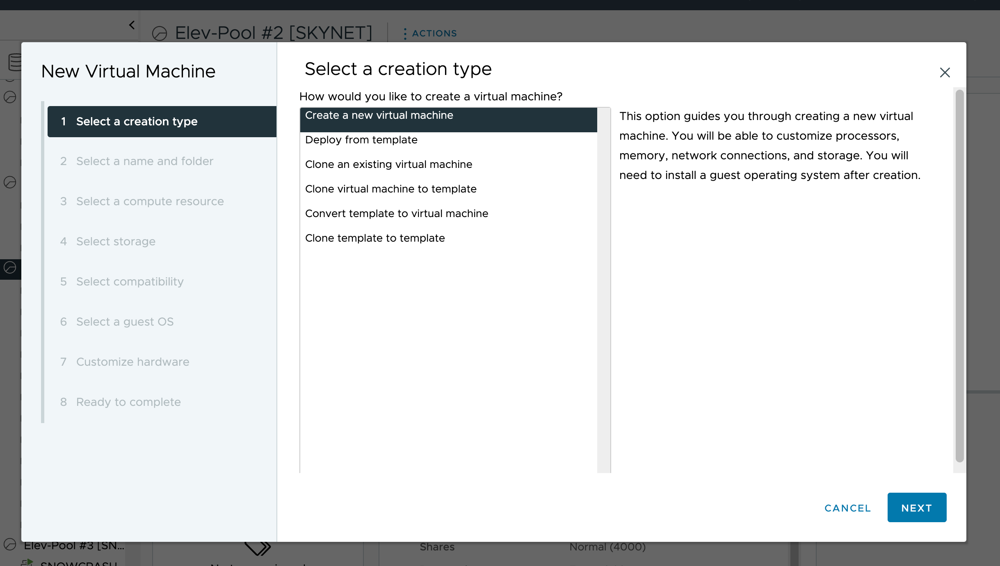
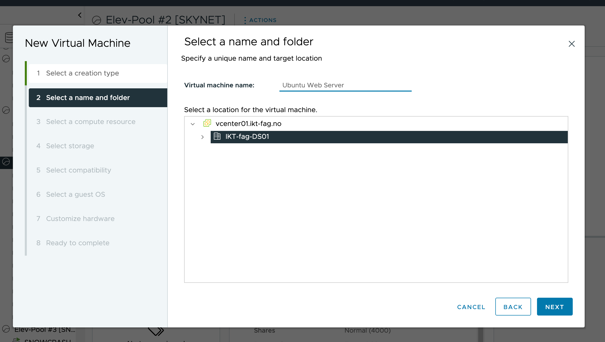
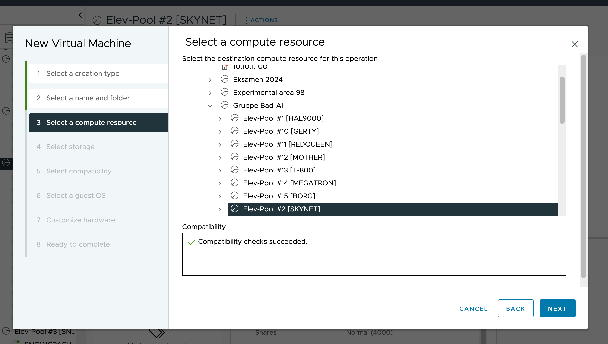
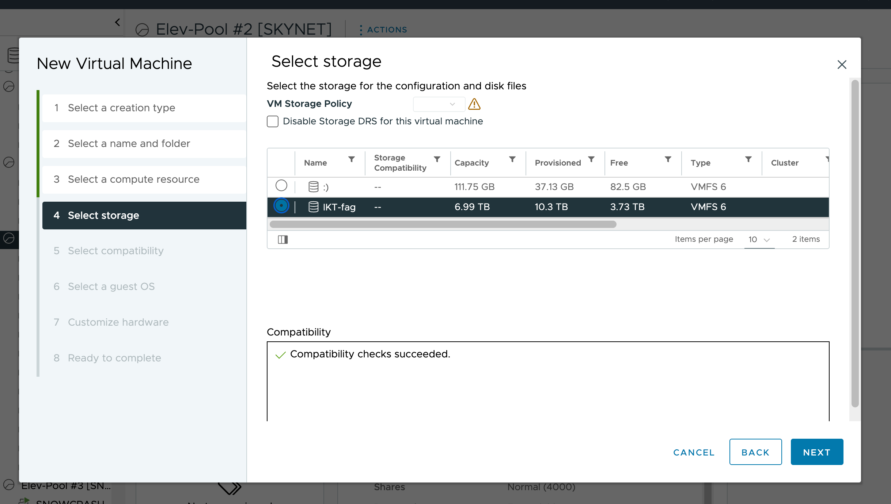
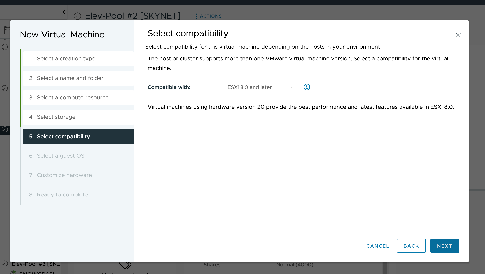
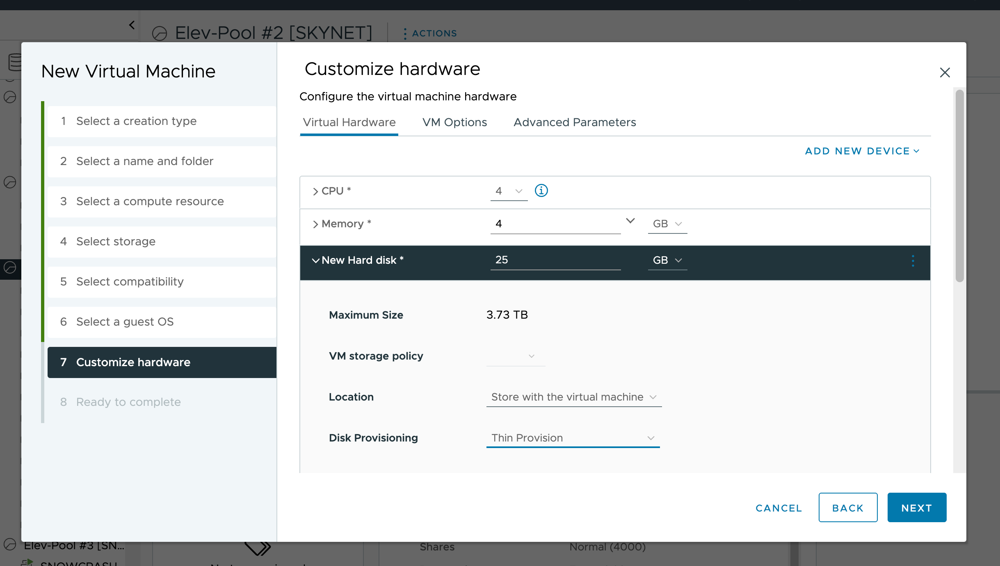
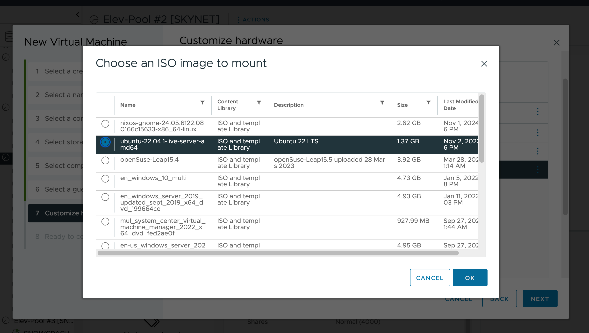
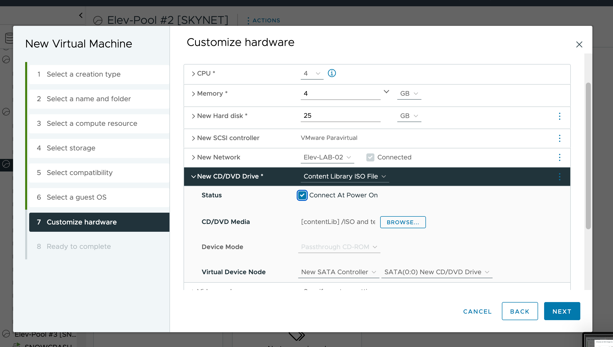
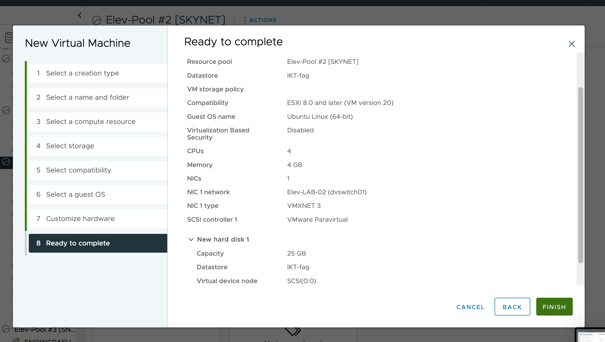

Tilgang til vSphere
For å opprette en VM i VirtualBox, følg disse stegene:
- Naviger til vSphere web-klienten i nettleseren din: https://10.10.1.20/ui 
- Høyreklikk på verten eller clusteret
- Velg "Ny Virtuell Maskin"
- Velg "Opprett en ny virtuell maskin"
- Velg navn og plassering for VM-en   
- CPU: Minimum 2 kjerner
- Minne: Minimum 4GB
- Lagring: Minimum 20GB
- Nettverk: Konfigurer nettverksadapter     
For å opprette en VM i VirtualBox, følg disse stegene:
Konfigurer VM-innstillinger
Start og Installere Ubuntu
For å starte Ubuntu på VM, følg disse stegene:
- Trykk på "Start"
- Velg ISO-fil
- Trykk "Start"
- Velg språk og trykk "Install Ubuntu"
- Velg "Normal Installation"
- Velg "Download updates while installing Ubuntu" og "Install third-party software"
- Velg "Erase disk and install Ubuntu" og trykk "Install Now"
- Velg tidssone og tastaturoppsett
- Velg brukernavn og passord
- Trykk "Restart Now"
Installere Ubuntu Webserver Nginx
For å installere Nginx, følg disse stegene:
- Åpne terminal
- Skriv "sudo apt update"
- Skriv "sudo apt install nginx"
- Skriv "sudo ufw allow 'Nginx HTTP'"
- Skriv "sudo ufw status"
- Skriv "systemctl status nginx"
- Åpne nettleser og skriv inn IP-adressen til VM
Lag Nettsiden
For å lage en nettside, følg disse stegene:
- Åpne terminal
- Skriv "sudo nano /var/www/html/index.html"
- Skriv inn HTML-kode
- Trykk "Ctrl + X" og "Y" for å lagre
- Åpne nettleser og skriv inn IP-adressen til VM
Deploy Fra Git
For å deploye nettsiden fra Git, følg disse stegene:
- Åpne terminal
- Skriv "sudo apt install git"
- Skriv "cd /var/www/html"
- Skriv "sudo git clone URL"
- Åpne nettleser og skriv inn IP-adressen til VM
Restart Nginx
For å restarte Nginx, følg disse stegene:
- Åpne terminal
- Skriv "sudo systemctl restart nginx"
Tips
Her er noen tips for å bruke Ubuntu:
- For å oppdatere Ubuntu, skriv "sudo apt update" og "sudo apt upgrade"
- For å installere programmer, skriv "sudo apt install PROGRAM"
- For å slette filer, skriv "rm FILE"
- For å restarte Ubuntu, skriv "sudo reboot"